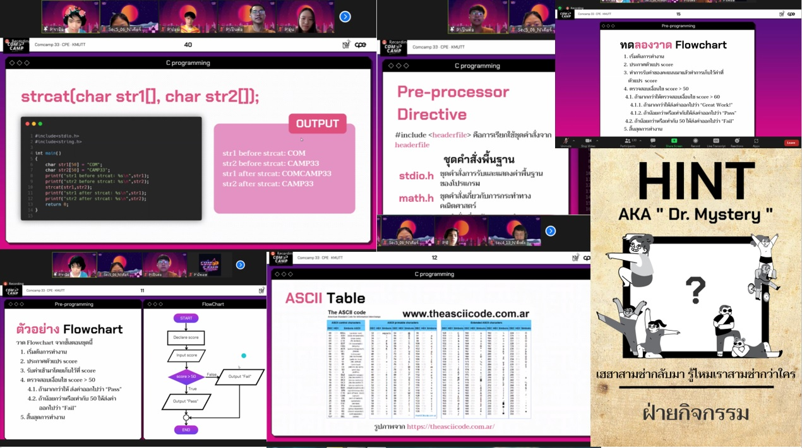

ในวันนี้เป็นวันที่ได้เริ่มเรียนเกี่ยวกับวิชาการเป็นวันแรก ซึ่งช่วงเช้าถึงช่วงพักเที่ยง พี่ ๆ ก็ได้สอนเกี่ยวกับ Pre Programming
และ C Programming ซึ่งพี่ ๆ ก็มีวิธีการสอนให้เราเข้าใจและเปิดโอกาสให้น้อง ๆ สอบถามตลอดเวลา นอกเหนือจากนี้พี่ ๆ
ยังมีแบบทดสอบให้น้อง ๆ ลองทำแล้วส่งในช่องแชทของ zoom เช่นให้ลองเขียน flowchart ใน Blank diagram แล้วก็
ให้หาชื่อตัวแปรที่ใช้งานไม่ได้ ส่วนในช่วงบ่ายถึงช่วงเย็น พี่ ๆ ได้มาสอน C Programming ต่อจากช่วงเช้า เรียกได้ว่าเป็นการ
สอนที่พี่ ๆ พยายามที่จะสอนเนื้อหาให้ได้ครอบคลุมมากที่สุด และถ้าใครไม่เข้าใจ ก็สามารถถามพี่ ๆ คนสอนและพี่ ๆ TA ได้
ตลอดเวลาทั้งขณะที่สอน หรือแม้กระทั่งพี่ ๆ สอนจบเรียบร้อย เราก็สามารถที่จะไปถามพี่ ๆ ได้เพิ่มเติม ซึ่งพี่ ๆ ก็พร้อมที่จะให้
คำปรึกษากับเราเกือบจะ 24 ชั่วโมงเลย หลังจากที่จบไปแล้วกับกิจกรรมวันแห่งวิชาการนี้ ความรู้ที่น้องๆ ทุกคนได้รับจากพี่ ๆ
นั้นล้นหลามมาก ๆ ถึงแม้ว่าจะเป็นระยะเวลาสั้น ๆ ทำให้เราอาจจะจำไม่ได้ทั้งหมด แต่ก็ประทับใจพี่ ๆ ในเรื่องของความใส่ใจ
น้อง ๆ และความตั้งใจในการจัดกิจกรรม Comcamp 33 นี้ขึ้นมา อีกทั้งพี่ ๆ ยังมีเว็บ Grader ให้น้อง ๆ ได้ลองฝึกทำโจทย์ด้วย
แต่ทว่าในช่วง 6 โมงเย็นนั้น ก็มีข้อความคำใบ้ปริศนามาจากด็อกเตอร์ ที่เราต้องทายให้ได้ว่าใครเป็นด็อกเตอร์ปริศนากันนะ!!!
